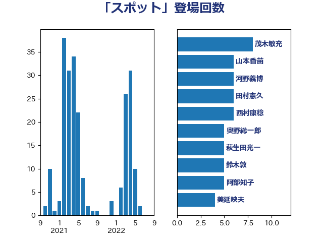

単語「スポット」

| 茂木敏充 | 自由民主党 | 8 回 |
| 山本香苗 | 公明党 | 6 回 |
| 河野義博 | 公明党 | 6 回 |
| 田村憲久 | 自由民主党 | 6 回 |
| 西村康稔 | 自由民主党 | 6 回 |
| 奥野総一郎 | 立憲民主党 | 5 回 |
| 萩生田光一 | 自由民主党 | 5 回 |
| 鈴木敦 | 国民民主党 | 5 回 |
| 阿部知子 | 立憲民主党 | 5 回 |
| 美延映夫 | 日本維新の会 | 4 回 |
| 吉良州司 | 無所属 | 3 回 |
| 山下芳生 | 日本共産党 | 3 回 |
| 山崎正恭 | 公明党 | 3 回 |
| 森本真治 | 立憲民主党 | 3 回 |
| 藤巻健太 | 日本維新の会 | 3 回 |
| 西村智奈美 | 立憲民主党 | 3 回 |
| 阿達雅志 | 自由民主党 | 3 回 |
| 高木かおり | 日本維新の会 | 3 回 |
| 高良鉄美 | 無所属 | 3 回 |
| 大野敬太郎 | 自由民主党 | 2 回 |
| 小熊慎司 | 立憲民主党 | 2 回 |
| 山岡達丸 | 立憲民主党 | 2 回 |
| 山崎誠 | 立憲民主党 | 2 回 |
| 志位和夫 | 日本共産党 | 2 回 |
| 末松信介 | 自由民主党 | 2 回 |
| 林芳正 | 自由民主党 | 2 回 |
| 秋本真利 | 自由民主党 | 2 回 |
| 竹内譲 | 公明党 | 2 回 |
| 細田健一 | 自由民主党 | 2 回 |
| 船田元 | 自由民主党 | 2 回 |
| 豊田俊郎 | 自由民主党 | 2 回 |
| 階猛 | 立憲民主党 | 2 回 |
| 音喜多駿 | 日本維新の会 | 2 回 |
| 高橋光男 | 公明党 | 2 回 |
| こやり隆史 | 自由民主党 | 1 回 |
| 三浦信祐 | 公明党 | 1 回 |
| 中島克仁 | 立憲民主党 | 1 回 |
| 伊藤俊輔 | 立憲民主党 | 1 回 |
| 倉林明子 | 日本共産党 | 1 回 |
| 吉田宣弘 | 公明党 | 1 回 |
| 宮本周司 | 自由民主党 | 1 回 |
| 寺田静 | 無所属 | 1 回 |
| 山田俊男 | 自由民主党 | 1 回 |
| 柳ヶ瀬裕文 | 日本維新の会 | 1 回 |
| 柳本顕 | 自由民主党 | 1 回 |
| 梅村みずほ | 日本維新の会 | 1 回 |
| 梅村聡 | 日本維新の会 | 1 回 |
| 横沢高徳 | 立憲民主党 | 1 回 |
| 水岡俊一 | 立憲民主党 | 1 回 |
| 浜口誠 | 国民民主党 | 1 回 |
| 滝波宏文 | 自由民主党 | 1 回 |
| 玉木雄一郎 | 国民民主党 | 1 回 |
| 田村智子 | 日本共産党 | 1 回 |
| 白石洋一 | 立憲民主党 | 1 回 |
| 石井正弘 | 自由民主党 | 1 回 |
| 石井章 | 日本維新の会 | 1 回 |
| 秋野公造 | 公明党 | 1 回 |
| 舩後靖彦 | れいわ新選組 | 1 回 |
| 辻元清美 | 立憲民主党 | 1 回 |
| 近藤昭一 | 立憲民主党 | 1 回 |
| 金子恵美 | 立憲民主党 | 1 回 |
| 長妻昭 | 立憲民主党 | 1 回 |
| 青山繁晴 | 自由民主党 | 1 回 |
| 馬場伸幸 | 日本維新の会 | 1 回 |
| 高野光二郎 | 自由民主党 | 1 回 |